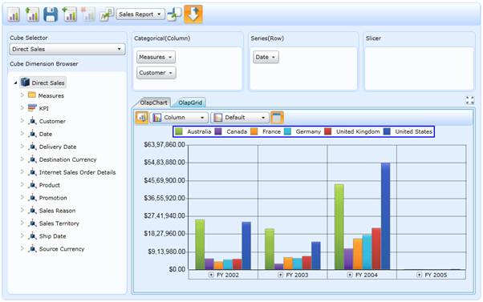

Essential OLAP Client control lets you to efficiently browse and analyze multidimensional data from the OLAP data source. It lists all the Cubes, Dimensions, Measures and Key Performance Indicator that are available in the data source, and lets us to slice and dice the cube (When you cut the data with one member it is called slicing. When you cut data with sets of members from two or more dimensions, it’s called dicing.). You can also create the report from the data source using OLAP Client and store it for later use. It also previews the report in the Chart and Grid while creating.
IT Scenarios
The OLAP Client will be useful for large enterprises to perform business analysis with their data. They can do analysis from various dimensions and set their feature goal.

Figure 1: OLAP Client